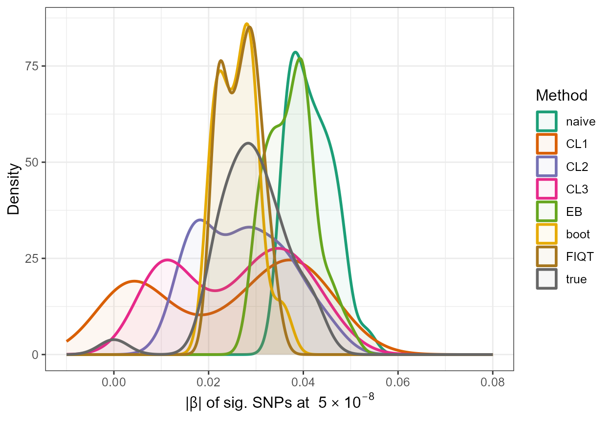

Methods for use with discovery GWAS
winners_curse_methods.RmdThis vignette demonstrates how our R package,
winnerscurse, can be used to obtain new adjusted
association estimates for each SNP when only the summary statistics from
a single genetic association study, namely the discovery GWAS, are
available. In order to do so, we create a toy data set using the
function sim_stats, which is included in the package, and
subsequently, illustrate how a user could engage with each of the
package’s winner’s curse correction functions using this data set.
The methods currently available for implementation are:
- Conditional Likelihood methods - Ghosh et al. (2008)
- Empirical Bayes method - Ferguson et al. (2013)
- FDR Inverse Quantile Transformation method - Bigdeli et al. (2016)
- Bootstrap method - Forde et al. (2023)
An important feature which distinguishes these four methods is detailed in the table below:
| Adjusts \(\beta\) estimate of only SNPs with \(p\)-values less than specified threshold, \(\alpha\) | Adjusts \(\beta\) estimate of all SNPs |
|---|---|
|
|
Creating a toy data set
The function
sim_statsprovides users with an opportunity to construct various simulated data sets of GWAS summary statistics which the correction methods can then be applied to. This allows users to perhaps gain a better understanding of each method before applying them to their own real data sets.-
sim_statsconstructs a large set of independent SNPs, in which there exists a polygenic background of a specified portion of these SNPs for the trait of interest while all other SNPs demonstrate no effect. When considering obtaining a simulated set of summary statistics for solely the discovery GWAS,sim_statsrequires the user to specify four arguments, namelynsnp,h2,prop_effectandnid:-
nsnp: the total number of SNPs -
h2: the heritability of the trait, i.e. the variance explained in the trait by all SNPs -
prop_effect: the proportion of the total number of SNPs truly associated with the trait -
nid: the number of samples in the study
-
With the above specifications, a set of rather realistic summary statistics can be obtained as shown below. For convenience purposes, the following default values have been supplied for the function’s arguments:
nsnp=10^6,h2=0.4,prop_effect=0.01,nid=50000. These values simulate summary statistics for 1,000,000 independent SNPs in which 1% have a true effect on this trait with moderate heritability and a total of 50,000 individuals have been sampled in the study.Note: For further information regarding simulating GWAS summary statistics, refer to the text supplement of Forde et al. (2023). This function has been designed based on the details described under the heading ‘Quantitative trait with independence assumed’.
sim_statsoutputs a list with three components. When only the discovery GWAS is considered, the third element in this list is merelyNULL, and so we are just concerned with the first two,trueanddisc.trueis a data frame with two columns,rsidwhich contains identification numbers for each SNP andtrue_betawhich is each SNP’s simulated true association value. This data frame is most useful if we wish to check how well our winner’s curse correction methods are performing.dischas three columns representing the summary statistics one would obtain in a discovery GWAS. For each SNP, this data frame contains its ID number, its estimated effect size and associated standard error. We note that this function outputs the set of summary statistics,disc, in a suitable way so that the winner’s curse correction methods can be directly applied, i.e. in the form of a data frame with three columnsrsid,betaandse.
set.seed(1998)
sim_dataset <- sim_stats(nsnp=10^6,h2=0.4,prop_effect=0.01,nid=50000)
## simulated GWAS summary statistics
summary_stats <- sim_dataset$disc
head(summary_stats)
#> rsid beta se
#> 1 1 -0.013919699 0.019222524
#> 2 2 0.003097741 0.009187098
#> 3 3 -0.037870279 0.016459187
#> 4 4 -0.011874324 0.019560506
#> 5 5 0.024414134 0.006334964
#> 6 6 -0.001690693 0.007697227Method 1: Conditional Likelihood
The function
conditional_likelihoodrequires a data frame, in the form described above, and a value foralpha, the significance threshold used in the GWAS. Note that all columns of the data frame must contain numerical values and each row must represent a unique SNP, identified byrsid.As the conditional likelihood methods have been designed to be only used for SNPs which are deemed significant, the data frame returned contains only SNPs that have \(p\)-values below the inputted genome-wide significance threshold value,
alpha.Note: If the \(z\)-statistic of a particular SNP is greater than 100, then merely the original naive estimate will be outputted for the second form of the adjusted estimate, namely
beta.cl2, for that SNP.If no SNPs are detected as significant, the function returns a warning message:
WARNING: There are no significant SNPs at this threshold.The returned data frame has SNPs ordered based on their \(p\)-values from smallest to largest, or equivalently, in descending order of \(\mid z \mid\) in which \(z\) is the estimated value for \(\beta\) divided by its standard error.
We implement the function on our toy data set as follows, choosing a significance threshold of
5e-8:
out_CL <- conditional_likelihood(summary_data = summary_stats, alpha = 5e-8)
head(out_CL)
#> rsid beta se beta.cl1 beta.cl2 beta.cl3
#> 1 3965 0.05013020 0.006345754 0.04999615 0.04944871 0.04972243
#> 2 7815 0.05040019 0.006567997 0.05015587 0.04937802 0.04976694
#> 3 4998 -0.04856148 0.006458450 -0.04821488 -0.04727195 -0.04774341
#> 4 7261 0.04649358 0.006342549 0.04597095 0.04478257 0.04537676
#> 5 6510 0.04611661 0.006499584 0.04522448 0.04357188 0.04439818
#> 6 9917 0.04489474 0.006333883 0.04401180 0.04238612 0.04319896Three columns have been added to the right of the inputted data frame: each represents a correction method suggested in Ghosh et al. (2008). The first,
beta.cl1, is referred to as the conditional MLE while the second,beta.cl2, is the mean of the normalized conditional likelihood. The third,beta.cl3is merely the average of the first two, known as the compromise estimator.Ghosh et al. (2008) noted that for instances in which the true \(\beta\) value is close to zero,
beta.cl2often has greater mean squared error thanbeta.cl1but for true \(\beta\) values further from zero,beta.cl2performs better. Thus, it was suggested thatbeta.cl3be used to combine the strengths of these two estimators. However, this function,conditional_likelihood, outputs values for all three estimators in order to allow the user to make their own decision on which they believe to be the most appropriate.
Method 2: Empirical Bayes
The function
empirical_bayesimplements the empirical Bayes method for correcting for Winner’s Curse, detailed in Ferguson et al. (2013), with a slight modification.The function has two arguments with the first being
summary_data, the data frame containingrsid,betaandsecolumns. Again, all columns of the data frame must contain numerical values and each row must represent a unique SNP, identified byrsid. In addition, the function requires that the data frame must contain at least 50 rows corresponding to 50 unique SNPs. This requirement is included as the empirical Bayes method performs poorly when only data of a small number of SNPs is available. The second argument,method, is a string parameter which allows the user to choose what modelling approach to take for the purpose of estimating the log density function. The default setting ismethod="AIC", which is a method very similar to that described by Ferguson et al. (2013). Other options includemethod="fix_df",method="scam",method="gam_nb"andmethod="gam_po". Ifmethod="fix_df", the degrees of freedom is set to 7. The other three options all enforce additional constraints on the shape of the estimated log density function by i) fitting a generalized additive model (GAM), with integrated smoothness estimation, (method="gam_nb"andmethod="gam_po") and ii) applying two shape constrained additive models (SCAMs) (method="scam"). These additional variations of the empirical Bayes approach are detailed in the ‘Materials and methods’ section of Forde et al. (2023).empirical_Bayesreturns the above described data frame but with a fourth column,beta_EBin which the adjusted estimates of this procedure have been added.As the empirical Bayes method makes adjustments to all SNPs, not only those that have been considered significant, this data frame contains all SNPs.
Note: The conditional likelihood methods adjust each statistic one at a time, and so summary statistics of one individual SNP can easily be inputted into the
conditional_likelihoodfunction. However, the empirical Bayes method requires many SNPs as the more information given to the function, the more accurate it will be at modelling the distribution and thus, making adjustments. Thus, as mentioned above,summary_datamust contain information related to more than 50 SNPs.Below is a demonstration of using
empirical_bayeswith our toy data set with the default setting formethod:
out_EB <- empirical_bayes(summary_data = summary_stats)
head(out_EB)
#> rsid beta se beta_EB
#> 1 3965 0.05013020 0.006345754 0.04721273
#> 2 7815 0.05040019 0.006567997 0.04738054
#> 3 4998 -0.04856148 0.006458450 -0.04196316
#> 4 7261 0.04649358 0.006342549 0.04357758
#> 5 6510 0.04611661 0.006499584 0.04312841
#> 6 9917 0.04489474 0.006333883 0.04198272Unfortunately, the Empirical Bayes estimator originally described by Ferguson et al. (2013) is known to perform poorly in the extreme tails of the distribution. Therefore, it is quite possible that a lack of adjustment for the \(\beta\) values of SNPs with the most extreme \(z\)-statistics could be witnessed with this method. A somewhat ad hoc approach to overcome this issue of combining the Empirical Bayes and the conditional likelihood methods was suggested by Ferguson et al. (2013).
In order to ensure that shrinkage does occur for the \(\beta\) values of these extreme SNPs, it was decided that the following modification would be added to the
empirical_bayesfunction withmethod="AIC". The basis function of the natural cubic spline has been altered so that the boundary knots are no longer the most extreme \(z\)-values. Instead, the lower boundary knot is defined as the \(10^{\text{th}}\) \(z\)-statistic when the \(z\)-statistics lie in increasing order while the upper boundary knot is the \(10^{\text{th}}\) \(z\)-statistic when the \(z\)-statistics have been arranged in decreasing order. The natural cubic spline is then merely linear beyond these boundary knots. This assists in fixing the ‘tails’ issue discussed above. We see that the reduction of the estimated \(\beta\) values for all of the top 6 most significant SNPs has occurred.
Method 3: FDR Inverse Quantile Transformation
The function
FDR_IQTimplements the winner’s curse adjustment method detailed in Bigdeli et al. (2016).Similar to the approaches above, the function requires a data frame with three columns
rsid,betaandse, all columns of the data frame must contain numerical values and each row must represent a unique SNP, identified byrsid.It also has an argument
min_pval, for which the default setting is1e-300. This is included in order to avoid zero \(p\)-values which can prove problematic for the function when evaluatingqnorm(). Furthermore, due to the nature of winner’s curse, it is in fact rare that observations with \(\mid z \mid > 37\) are biased.The function outputs a data frame similar to that inputted with an additional column containing the adjusted estimate,
beta_FIQT, and again, the SNPs have been reordered according to their individual \(z\)-statistics.
out_FIQT <- FDR_IQT(summary_data = summary_stats)
head(out_FIQT)
#> rsid beta se beta_FIQT
#> 1 3965 0.05013020 0.006345754 0.03771470
#> 2 7815 0.05040019 0.006567997 0.03783823
#> 3 4998 -0.04856148 0.006458450 -0.03633847
#> 4 7261 0.04649358 0.006342549 0.03442008
#> 5 6510 0.04611661 0.006499584 0.03364166
#> 6 9917 0.04489474 0.006333883 0.03278400Method 4: Bootstrap
Inspired by the bootstrap resampling method first detailed in Faye et al. (2011), the function
BR_ssimplements a similar approach which can be easily applied to published sets of GWAS summary statistics without the requirement of access to original individual-level data. The major advantage of our alternative suggested method is the considerable improvement in computational efficiency, with a reasonably low level of conceptual difficulty being maintained. A comprehensive description of this new bootstrap method can be found in the ‘Materials and methods’ section of Forde et al. (2023).BR_sstakes a data framesummary_datawith three columns:rsid,beta,se, and returns the inputted data frame along with the adjusted estimate for \(\beta\),beta_BR_ss. Note that all columns of the data frame,summary datamust contain numerical values, each row must represent a unique SNP, identified byrsidand the function requires that there must be at least 5 unique SNPs so that the smoothing spline can be implemented successfully. The function also has a logical parameterseed_optwhich can be set toTRUEby the user to permit reproducibility. Its default setting isseed_opt=FALSE. As this method involves bootstrap implementation, the use of a seed can allow the user to obtain the exact same results forbeta_BR_sswhen running the function many times on the same dataset. The parameterseedprovides the user with an option to set their desired value for the seed when usingseed_opt=TRUE. The default forseedis the arbitrary value of1998.
\(~\)
Brief method description:
-
This procedure begins with arranging all \(N\) SNPs according to their original \(z\)-statistics, \(z_i = \frac{\hat\beta_i}{\hat{\text{se}(\hat\beta_i)}}\), in descending order. A randomized estimate of the extent of ranking bias for the \(k^{th}\) largest \(z\)-statistic is calculated by means of the parametric bootstrap as follows:
A value \(\hat\beta_i^{\text{b}}\) is simulated for SNP \(i, i=1,...,N\), independently, from a Gaussian distribution with mean \(\hat\beta_i\) and standard deviation \(\hat{\text{se}(\hat\beta_i)}\), i.e. \[\hat\beta_i^{\text{b}} \sim N(\hat\beta_i, \hat{\text{se}(\hat\beta_i)}).\]
Upon obtaining \(\hat\beta_i^{\text{b}}\) for \(i, i=1,...,N\), the SNPs are subjected to an ordering in which they are arranged based on their \(z_i^{\text{b}}\)-statistics, in descending order. The \(z_i^{\text{b}}\)-statistic of SNP \(i\) is defined as \[z_i^{\text{b}} = \frac{\hat\beta_i^{\text{b}}}{\hat{\text{se}(\hat\beta_i)}}.\]Due to this ordering, each SNP is assigned a rank \(A(k)\). Equivalently, we define \(A(k)\) as the index corresponding to the \(k^{th}\) largest entry in the vector: \([z_1^{\text{b}}, ..., z_N^{\text{b}}] = [\frac{\hat\beta_1^{\text{b}}}{\hat{\text{se}(\hat\beta_1)}}, ..., \frac{\hat\beta_N^{\text{b}}}{\hat{\text{se}(\hat\beta_N)}}]\).
Then, the estimated bias of SNP \(k\), the SNP with the \(k^{th}\) largest original \(z\)-statistic, takes the following form: \[\text{bias}_k = \frac{\hat\beta_{A(k)}^{\text{b}}- \hat\beta_{A(k)}^{\text{oob}}}{\hat{\text{se}(\hat\beta_{A(k)})}} = \frac{\hat\beta_{A(k)}^{\text{b}}- \hat\beta_{A(k)}}{\hat{\text{se}(\hat\beta_{A(k)})}},\]in which \(\hat\beta_{A(k)}^{\text{b}}\) is the bootstrap value of the SNP ranked in position \(k\) in the ordering of \(z_i^{\text{b}}\)-statistics, \(\hat\beta_{A(k)}^{\text{oob}} = \hat\beta_{A(k)}\) is that same SNP’s original \(\beta\) estimate and \(\hat{\text{se}(\hat\beta_{A(k)})}\) its standard error.
In the next step of the process, a cubic smoothing spline is fitted to the data in which the \(z\)-statistics are considered as the inputs and \(\text{bias}_k\), their corresponding outputs. The predicted values from this model fitting provides new estimates for the bias correction, \(\text{bias}_k^*\) for each SNP. This additional stage in which \(\text{bias}_k^*\) is obtained eliminates the need for several bootstrap iterations for each SNP in order to ensure competitive performance of the method. Thus, this results in an approach that is faster as only one bootstrap iteration is required per SNP, while using \(\text{bias}_k^*\) instead of \(\text{bias}_k\) ensures that the method has greater accuracy.
Finally, the new estimate for the true effect size of SNP k, the SNP with the \(k^{\text{th}}\) largest original \(z\)-statistic, is defined as \(\hat\beta_k^* = \hat\beta_k - \hat{\text{se}(\hat\beta_k)} \cdot \text{bias}_k^*\).
out_BR_ss <- BR_ss(summary_data = summary_stats, seed_opt=TRUE, seed=2020)
head(out_BR_ss)
#> rsid beta se beta_BR_ss
#> 1 3965 0.05013020 0.006345754 0.04173996
#> 2 7815 0.05040019 0.006567997 0.04114148
#> 3 4998 -0.04856148 0.006458450 -0.03687195
#> 4 7261 0.04649358 0.006342549 0.03668250
#> 5 6510 0.04611661 0.006499584 0.03544370
#> 6 9917 0.04489474 0.006333883 0.03447524Comparing Results
As we have simulated our data set, we have the ability to quantify
the amount of bias present in the original naive \(\beta\) estimates and also, in our adjusted
estimates for each method. Thus, we can briefly examine how each
correction method performed with respect to our simulated data set.
Similar to Forde
et al. (2023), assessment can take place using measures
such as the estimated root mean square error of significant SNPs
(rmse) and the estimated average bias over all significant
SNPs (bias). These two evaluation metrics can be be
mathematically defined as follows, in which there are \(N_{\text{sig}}\) significant SNPs:
-
rmse\(= \sqrt{\frac{1}{N_{\text{sig}}}\sum_{i=1}^{N_{\text{sig}}} (\hat\beta_{\text{adj},i} - \beta_i)^2}\) -
bias\(= \frac{1}{N_{\text{sig}}} \sum_{i=1}^{N_{\text{sig}}} ( \hat\beta_{\text{adj},i}- \beta_i)\)
\(\star\) Note: This average bias will be computed separately for significant SNPs with positive and negative true effects to avoid the bias in either direction simply cancelling each other out.
\(\star\) Note: We compare our methods based on their performance with respect to SNPs that pass a certain threshold as these are the SNPs that have association estimates affected by winner’s curse and most often, it is the effect sizes of these SNPs that researchers are most interested in.
We consider a significance threshold of \(\alpha = 5 \times 10^{-8}\) and subset the outputted data frames as required.
## Simulated true effect sizes:
true_beta <- sim_dataset$true$true_beta
## Subset required data sets:
out_EB_sig <- out_EB[2*pnorm(abs(out_EB$beta/out_EB$se), lower.tail = FALSE) < 5e-8,]
out_FIQT_sig <- out_FIQT[2*pnorm(abs(out_FIQT$beta/out_FIQT$se), lower.tail=FALSE) < 5e-8,]
out_BR_ss_sig <- out_BR_ss[2*pnorm(abs(out_BR_ss$beta/out_BR_ss$se), lower.tail=FALSE) < 5e-8,]The estimated root mean square error of significant SNPs for each
method is computed below. It can be seen that all methods demonstrate
improvements over merely using the naive unadjusted association
estimates as the rmse values for each method are lower than
that of naive. The bootstrap method provides the lowest
value for rmse.
## rmse
rmse <- data.frame(naive = sqrt(mean((out_CL$beta - true_beta[out_CL$rsid])^2)), CL1 = sqrt(mean((out_CL$beta.cl1 - true_beta[out_CL$rsid])^2)), CL2 = sqrt(mean((out_CL$beta.cl2 - true_beta[out_CL$rsid])^2)), CL3= sqrt(mean((out_CL$beta.cl3 - true_beta[out_CL$rsid])^2)),EB = sqrt(mean((out_EB_sig$beta_EB - true_beta[out_EB_sig$rsid])^2)), FIQT = sqrt(mean((out_FIQT_sig$beta_FIQT - true_beta[out_FIQT_sig$rsid])^2)), boot= sqrt(mean((out_BR_ss_sig$beta_BR_ss - true_beta[out_BR_ss_sig$rsid])^2)))
rmse
#> naive CL1 CL2 CL3 EB FIQT
#> 1 0.01486281 0.01277932 0.00875216 0.01049765 0.01080075 0.007897031
#> boot
#> 1 0.007715133The next metric, the average bias over all significant SNPs with
positive association estimates, is included below. Here, we wish to
obtain values closer to zero than the naive approach and it
can be seen that all methods achieve this.
## bias positive
pos_sig <- out_CL$rsid[out_CL$beta > 0]
pos_sigA <- which(out_CL$rsid %in% pos_sig)
bias_up <- data.frame(naive = mean(out_CL$beta[pos_sigA] - true_beta[pos_sig]), CL1 = mean(out_CL$beta.cl1[pos_sigA] - true_beta[pos_sig]), CL2 = mean(out_CL$beta.cl2[pos_sigA] - true_beta[pos_sig]), CL3= mean(out_CL$beta.cl3[pos_sigA] - true_beta[pos_sig]),EB = mean(out_EB_sig$beta_EB[pos_sigA] - true_beta[pos_sig]), FIQT = mean(out_FIQT_sig$beta_FIQT[pos_sigA] - true_beta[pos_sig]), boot= mean(out_BR_ss_sig$beta_BR_ss[pos_sigA] - true_beta[pos_sig]))
bias_up
#> naive CL1 CL2 CL3 EB FIQT
#> 1 0.0126302 0.002708404 0.00279926 0.002753832 0.008984969 -0.001100354
#> boot
#> 1 0.000130083In a similar manner, the average bias over all significant SNPs with negative association estimates, is computed. Again, we see that the application of all methods result in, on average, less biased association estimates for these SNPs, as desired.
## bias negative
neg_sig <- out_CL$rsid[out_CL$beta < 0]
neg_sigA <- which(out_CL$rsid %in% neg_sig)
bias_down <- data.frame(naive = mean(out_CL$beta[neg_sigA] - true_beta[neg_sig]), CL1 = mean(out_CL$beta.cl1[neg_sigA] - true_beta[neg_sig]), CL2 = mean(out_CL$beta.cl2[neg_sigA] - true_beta[neg_sig]), CL3= mean(out_CL$beta.cl3[neg_sigA] - true_beta[neg_sig]),EB = mean(out_EB_sig$beta_EB[neg_sigA] - true_beta[neg_sig]), FIQT = mean(out_FIQT_sig$beta_FIQT[neg_sigA] - true_beta[neg_sig]), boot= mean(out_BR_ss_sig$beta_BR_ss[neg_sigA] - true_beta[neg_sig]))
bias_down
#> naive CL1 CL2 CL3 EB FIQT
#> 1 -0.01172448 0.001909202 0.0003890267 0.001149115 -0.004655593 0.00188084
#> boot
#> 1 0.001905609\(\star\) Note: In
the above results, it is seen that the empirical Bayes method doesn’t
seem to be performing as well as the other methods, i.e. the reductions
in rmse and bias are small in comparison. The
reason for this is perhaps that it is the original form of the empirical
Bayes method that has been used here. It is possible that using another
variation of the method, for example setting
method="gam_nb" or method="scam", would result
in improvements, as shown in Forde
et al. (2023).
To complement the above, we provide an illustration of boxplots obtained for the root mean square error of significant SNPs (RMSE of sig. SNPs at \(5 \times 10^{-8}\)), plotted for each winner’s curse correction method (Method).
library(RColorBrewer)
library(ggplot2)
col <- brewer.pal(8,"Dark2")
all_results <- data.frame(rsid = c(rep(out_CL$rsid,7)), beta = c(rep(out_CL$beta,7)), se = c(rep(out_CL$se,7)), adj_beta = c(out_CL$beta,out_CL$beta.cl1,out_CL$beta.cl2,out_CL$beta.cl3,out_EB_sig$beta_EB,out_FIQT_sig$beta_FIQT,out_BR_ss_sig$beta_BR_ss), method = c(rep("naive",34),rep("CL1",34),rep("CL2",34),rep("CL3",34),rep("EB",34),rep("FIQT",34),rep("boot",34)))
all_results$rmse <- sqrt((all_results$adj_beta - true_beta[all_results$rsid])^2)
all_results$method <- factor(all_results$method, levels=c("naive","CL1", "CL2", "CL3", "EB", "boot", "FIQT"))
ggplot(all_results,aes(x=method,y=rmse,fill=method, color=method)) + geom_boxplot(size=0.7,aes(fill=method, color=method, alpha=0.2)) + scale_fill_manual(values=c(col[1],col[2],col[3],col[4],col[5],col[6],col[7])) + scale_color_manual(values=c(col[1],col[2],col[3],col[4],col[5],col[6],col[7])) + xlab("Method") +
ylab(expression(paste("RMSE of sig. SNPs at ", 5%*%10^-8))) + theme_bw() + geom_hline(yintercept=0, colour="black") + theme(axis.text.x=element_text(angle=90, vjust=0.5, hjust=1),text = element_text(size=12),legend.position = "none", strip.text = element_text(face="italic")) 
In addition, we can gain a visual insight into the adjustments made by these functions by constructing a density plot with the adjusted absolute values along with the naive estimates and the true absolute \(\beta\) values of significant SNPs, as follows:
true <- data.frame(rsid = c(out_CL$rsid), beta=c(out_CL$beta), se=c(out_CL$se),adj_beta=true_beta[out_CL$rsid],method=c(rep("true",34)))
all_resultsA <- rbind(all_results[,1:5],true)
ggplot(all_resultsA, aes(x=abs(adj_beta),colour=method,fill=method)) + geom_density(alpha=0.05,size=1) + scale_color_brewer(palette="Dark2") + scale_fill_brewer(palette="Dark2") + xlim(-0.01,0.08) +
ylab("Density") + xlab(expression(paste("|", beta, "| " , "of sig. SNPs at ", 5%*%10^-8))) + theme_bw() + theme(text = element_text(size=12)) + labs(fill = "Method",colour="Method")
\(~\) \(~\)
Application of methods to a real data set
In this final section, we will provide a short demonstration of applying these winner’s curse correction methods to a real data set.
Briefly, the data set we will use is a subset of the first BMI data
set used in Forde
et al. (2023), which was obtained from the UK Biobank. In
order to obtain a smaller data set suitable for demonstration purposes
in this vignette, LD clumping was performed on the data set used in the
aforementioned paper using the ld_clump() function from the
ieugwasr R package. The
LD (r-squared) threshold for clumping was set to 0.01 while the
physical distance threshold used was 100 kb. This procedure provided a
data set of 272,604 SNPs with corresponding association estimates
(beta) and standard errors (se) as well as
association estimates obtained in an independent replication
GWAS of a similar size (beta_rep). The first six rows of
this data set are outputted below.
BMI_UKBB <- read.csv("https://raw.githubusercontent.com/amandaforde/winnerscurse_realdata/main/data/summary_stats_BMI.txt",quote = "", row.names = NULL, col.names = c("chr","pos","rsid","beta","se","beta_rep"), stringsAsFactors = FALSE)
head(BMI_UKBB)
#> chr pos rsid beta se beta_rep
#> 1 1 801536 "rs79373928" 0.00691695 0.0672237 -0.00845073
#> 2 1 809876 "rs57181708" 0.08085120 0.0271055 0.05181780
#> 3 1 815656 "rs557970564" 0.16602900 0.0887715 -0.13927300
#> 4 1 834430 "rs533316052" -0.06663160 0.0685312 -0.05314070
#> 5 1 837657 "rs149737509" -0.00116905 0.0623581 -0.06175060
#> 6 1 852758 "rs4970462" -0.02576140 0.0200347 -0.02956890We apply the correction methods to this data set as follows and obtain adjusted association estimates for significant SNPs at the genome-wide significance threshold of \(5 \times 10^{-8}\).
BMI_data <- BMI_UKBB[,3:5]
out_CL_BMI <- conditional_likelihood(summary_data = BMI_data, alpha = 5e-8)
out_EB_BMI <- empirical_bayes(summary_data = BMI_data)
out_FIQT_BMI <- FDR_IQT(summary_data = BMI_data)
out_boot_BMI <- BR_ss(summary_data = BMI_data, seed=2020)
## Subset required data sets:
out_EB_BMI_sig <- out_EB_BMI[2*pnorm(abs(out_EB_BMI$beta/out_EB_BMI$se), lower.tail = FALSE) < 5e-8,]
out_FIQT_BMI_sig <- out_FIQT_BMI[2*pnorm(abs(out_FIQT_BMI$beta/out_FIQT_BMI$se), lower.tail=FALSE) < 5e-8,]
out_boot_BMI_sig <- out_boot_BMI[2*pnorm(abs(out_boot_BMI$beta/out_boot_BMI$se), lower.tail=FALSE) < 5e-8,]\(\star\) Note: In
the case of real data, the true association
values are unknown. Therefore, in order to evaluate the performance of
methods, we will make use of beta_rep, the association
estimates obtained in an independent replication GWAS of a
similar size. These association estimates are considered to be
unbiased, and thus can be used to obtain an
expression for the estimated mean square error (MSE) of significant
SNPs. This expression is given in Eq [14] of Forde
et al. (2023) and can be computed for each method as shown
below. It can be seen that each method provides an estimated MSE value
lower than that of the naive approach of using the unadjusted
association estimates from the discovery GWAS.
## mse
beta_rep <- BMI_UKBB$beta_rep[BMI_UKBB$rsid %in% out_CL_BMI$rsid]
mse <- data.frame(naive = mean((beta_rep - out_CL_BMI$beta)^2) - mean(out_CL_BMI$se^2), CL1 = mean((beta_rep - out_CL_BMI$beta.cl1)^2) - mean(out_CL_BMI$se^2), CL2 = mean((beta_rep - out_CL_BMI$beta.cl2)^2) - mean(out_CL_BMI$se^2), CL3 = mean((beta_rep - out_CL_BMI$beta.cl3)^2) - mean(out_CL_BMI$se^2), EB = mean((beta_rep - out_EB_BMI_sig$beta_EB)^2) - mean(out_EB_BMI_sig$se^2), boot = mean((beta_rep - out_boot_BMI_sig$beta_BR_ss)^2) - mean(out_boot_BMI_sig$se^2), FIQT = mean((beta_rep - out_FIQT_BMI_sig$beta_FIQT)^2) - mean(out_FIQT_BMI_sig$se^2))
mse
#> naive CL1 CL2 CL3 EB boot FIQT
#> 1 0.03608036 0.02946674 0.02870324 0.02897353 0.03029724 0.02874184 0.02859518For illustration purposes, we again simply produce a density plot with the adjusted absolute values along with the naive estimates and the true absolute \(\beta\) values of significant SNPs.
all_results <- data.frame(rsid = c(rep(out_CL_BMI$rsid,7)), beta = c(rep(out_CL_BMI$beta,7)), se = c(rep(out_CL_BMI$se,7)), adj_beta = c(out_CL_BMI$beta,out_CL_BMI$beta.cl1,out_CL_BMI$beta.cl2,out_CL_BMI$beta.cl3,out_EB_BMI_sig$beta_EB,out_FIQT_BMI_sig$beta_FIQT,out_boot_BMI_sig$beta_BR_ss), method = c(rep("naive",214),rep("CL1",214),rep("CL2",214),rep("CL3",214),rep("EB",214),rep("FIQT",214),rep("boot",214)))
all_results$method <- factor(all_results$method, levels=c("naive","CL1", "CL2", "CL3", "EB", "boot", "FIQT"))
rep <- data.frame(rsid = c(out_CL_BMI$rsid), beta=c(out_CL_BMI$beta), se=c(out_CL_BMI$se),adj_beta=beta_rep,method=c(rep("rep",214)))
all_resultsA <- rbind(all_results[,1:5],rep)
ggplot(all_resultsA, aes(x=abs(adj_beta),colour=method,fill=method)) + geom_density(alpha=0.05,size=1) + scale_color_brewer(palette="Dark2") + scale_fill_brewer(palette="Dark2") + xlim(-0.1,0.4) +
ylab("Density") + xlab(expression(paste("|", beta, "| " , "of sig. SNPs at ", 5%*%10^-8))) + theme_bw() + theme(text = element_text(size=12)) + labs(fill = "Method",colour="Method")